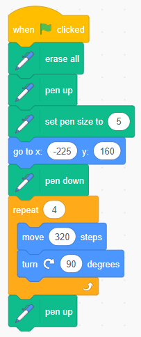

رسم المربع
A) المربع — الطريقة الأسهل
أقل عدد ممكن من اللبنات: حلقة تكرار 4 + حركة ودوران.

كود سكراتش لرسم مربع
when green flag clicked
erase all
pen up
set pen size to (5)
go to x:(-225) y:(160)
pen down
repeat (4)
move (320) steps
turn clockwise (90) degrees
end
pen upB) المربع — باستخدام النقاط الثابتة (X/Y)
استخدم أربع نقاط أركان: (-150,150) → (150,150) → (150,-150) → (-150,-150) → العودة.

كود سكراتش لرسم مربع باستخدام النقاط الثابتة
when green flag clicked
erase all
pen up
set pen size to (5)
go to x:(-150) y:(150)
pen down
glide (1) secs to x:(150) y:(150)
glide (1) secs to x:(150) y:(-150)
glide (1) secs to x:(-150) y:(-150)
glide (1) secs to x:(-150) y:(150)
pen upالنتيجة النهائية لرسم المربع
C) المربع — باستخدام متغيّر (طول_الضلع)
لتغيير حجم المربع بسهولة، يمكننا استخدام متغير. قم بإنشاء متغير جديد اسمه طول_الضلع.

كود سكراتش لرسم مربع بمتغير
when green flag clicked
erase all
pen up
set pen size to (5)
go to x:(-225) y:(160)
pen down
set [طول_الضلع] to (150)
repeat (4)
move (طول_الضلع) steps
turn clockwise (90) degrees
end
pen upصورة النتيجة
نتيجة تشغيل الكود
D) ترقية: لبنة مخصّصة — ارسم مربع(الضلع)
تعريف اللبنة
define ارسم مربع (الضلع)
repeat (4)
move (الضلع) steps
turn clockwise (90) degrees
end
الاستخدام
when green flag clicked
erase all
pen up
set pen size to (5)
go to x:(-225) y:(160)
pen down
ارسم مربع (150)
pen up
E) مشروع: تداخل المربعات (Overlapping Squares)
لإنشاء شكل مركب باستخدام لبنة ارسم مربع (الضلع)، يمكننا تكرار رسم المربع مع تحريك بسيط (دوران) بين كل تكرار.
كود سكراتش

تكرار رسم المربع مع دوران
صورة النتيجة
النتيجة النهائية للشكل
لبنات الكود الأساسية المستخدمة
when green flag clicked
show
erase all
pen up
set pen size to (5)
go to x:(-150) y:(150)
point in direction 90
set [Y-position] to (150)
ask "ما هو طول الضلع ؟" and wait
set [my variable] to [answer]
repeat (15)
repeat (4)
pen down
move [my variable] steps
turn clockwise (90) degrees
end
pen up
change y by -10
change x by 10
change [my variable] by 20
end
hide